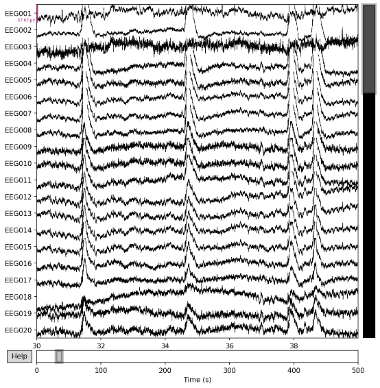
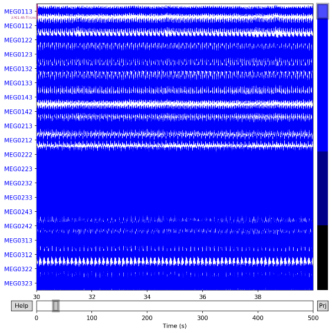
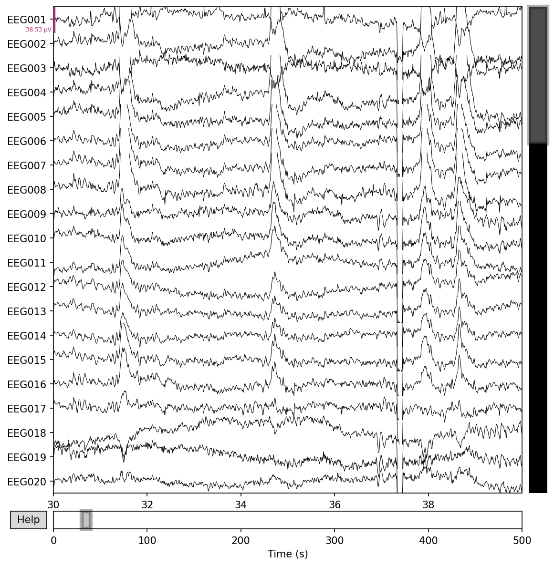
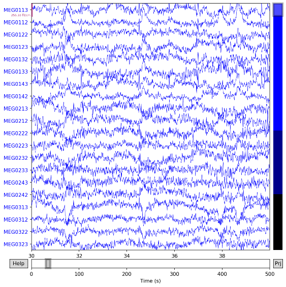
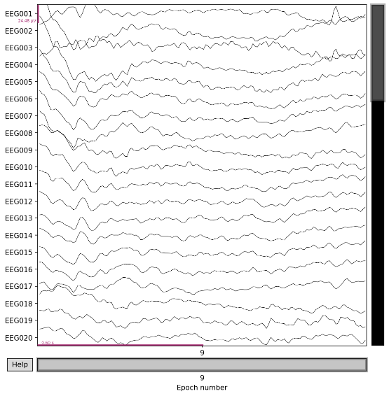
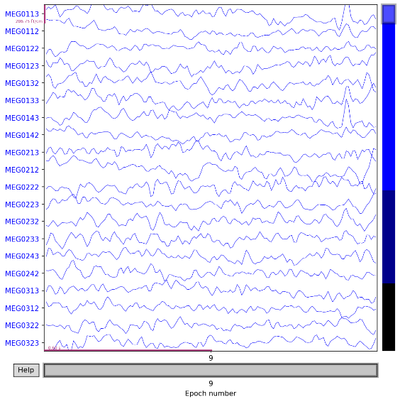

EEG & MEG Multimodal Fusion Research
Preview the full academic poster directly below:
Electroencephalography (EEG) and magnetoencephalography (MEG) represent two widely used non-invasive neuroimaging methods, both capable of capturing neural activity at millisecond temporal resolution. The key difference lies in their sensitivity patterns: EEG responds to radial and tangential current sources alike, whereas MEG predominantly picks up tangential sources with better spatial localization. Combining these two modalities could give researchers a more complete picture of how brain activity unfolds over time.
To address these challenges, this work introduces DAF-Net (short for Deep Attention Fusion Network), a graph neural network architecture designed specifically for EEG-MEG fusion, together with a complementary Topological Data Analysis (TDA) approach. Within the DAF-Net framework, we first build separate brain networks for each modality based on functional connectivity, then apply Graph Convolutional Networks (GCNs) to capture spatial relationships and bidirectional LSTM networks to model temporal dynamics.
We validate the proposed approach on the Wakeman-Henson face-recognition dataset. In a four-subject trial-level evaluation using binary classification (famous vs unfamiliar faces), DAF-Net achieved a peak classification accuracy of 79.72%.
脑电图（EEG）与脑磁图（MEG）作为互补的无创神经成像技术，能够提供高时间分辨率的脑活动测量。其中，EEG对径向和切向电流源均敏感，而MEG主要检测切向源且具有更高的空间精度。融合这两种模态有望更全面地理解神经动力学；然而，由于二者物理属性不同、通道拓扑结构各异，其融合仍然面临挑战。
本文提出了一种新颖的图神经网络（GNN）框架——DAF-Net（深度注意力融合网络），以及一套鲁棒的拓扑数据分析（TDA）流程。DAF-Net利用功能连通性度量构建模态特异性脑网络，并通过图卷积网络（GCN）和双向长短期记忆网络（BiLSTM）提取空间与时间特征。该网络的核心创新在于一种双向交叉注意力机制。
我们在Wakeman-Henson面孔加工MEEG数据集上评估了所提方法。实验结果表明，DAF-Net实现了 79.72% 的分类准确率，在当前四名受试者的trial-level设置下表现优于单模态方法。
Introduction to EEG and MEG principles






In the future, we will be able to use brainwave patterns to analyse what the human eye is seeing
Concept visualization of the next-phase algorithm architecture